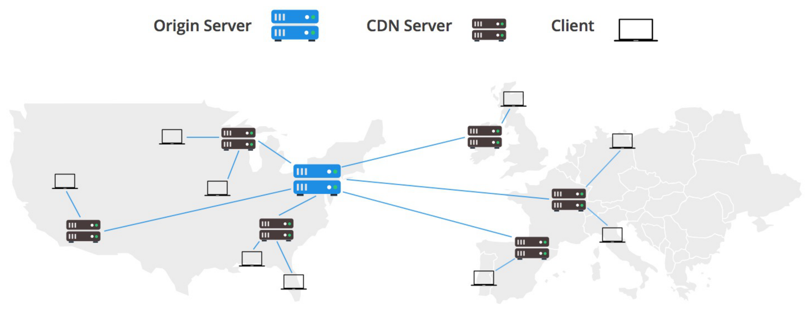
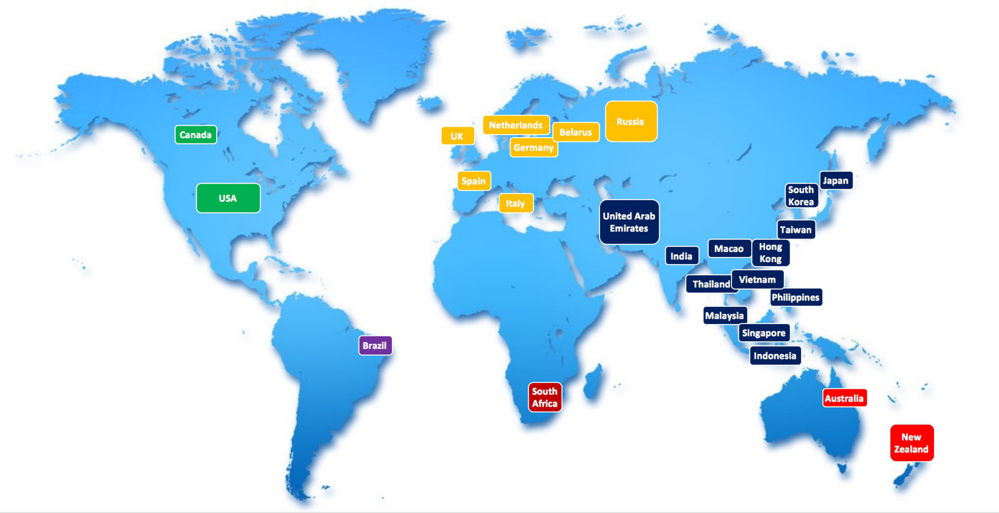
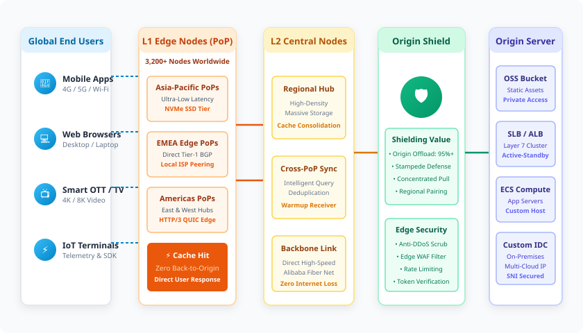
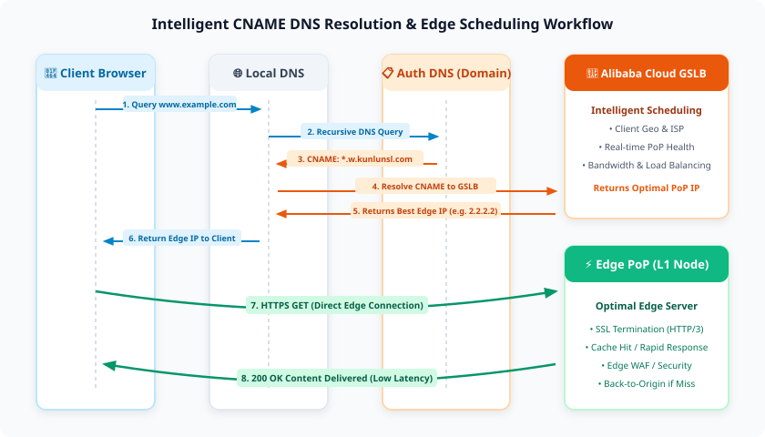
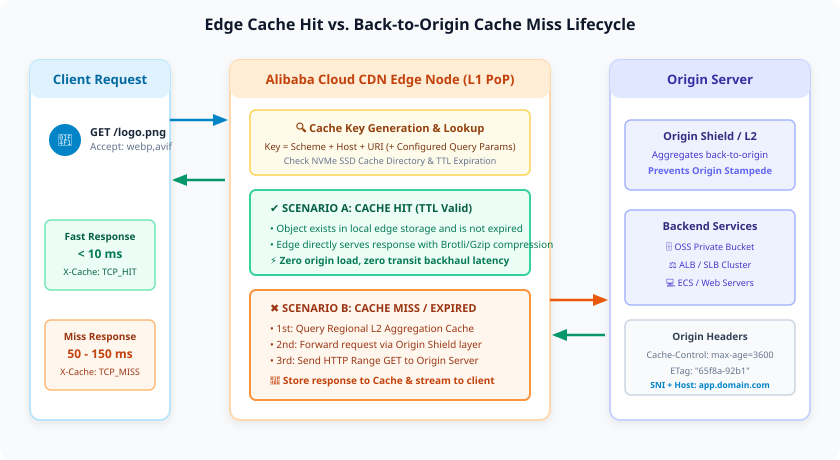
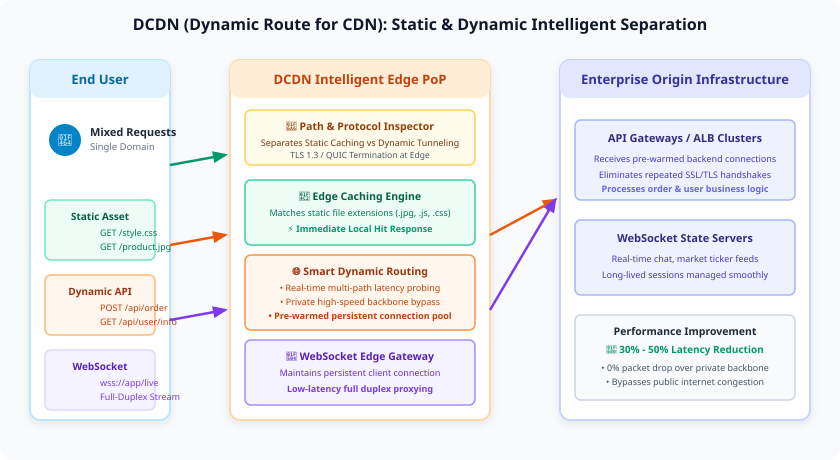
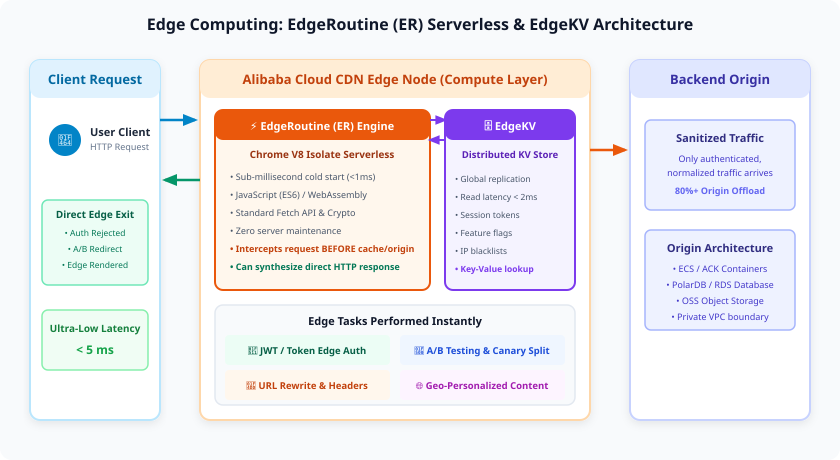
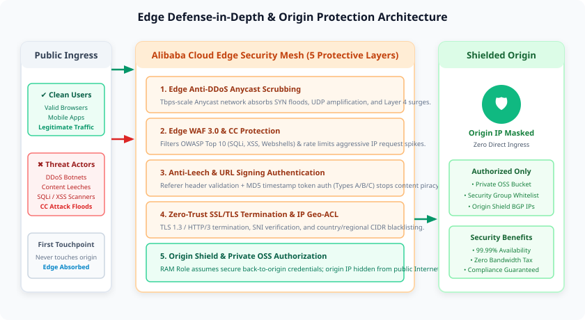

Module 08: Content Delivery Network (CDN)
Agenda & Learning Objectives
- CDN Architecture & Global Delivery
- DNS Resolution & Request Workflow
- Caching Hierarchy & Cache Management
- Dynamic Route for CDN (DCDN)
- Edge Computing with EdgeRoutine
- Edge Security & Origin Protection
How CDN Works

The origin server holds the original content. CDN servers cache copies of it close to users. Each client is served by its nearest CDN server, and the CDN server only contacts the origin when the content is not yet cached.
Alibaba Cloud CDN
Alibaba Cloud Content Delivery Network (CDN) is an enterprise-grade distributed network that caches content across geographically dispersed edge nodes (Points of Presence) close to end users.
Compared to traditional centralized web hosting where all client traffic travels across unpredictable public internet hops to a single datacenter, Alibaba Cloud CDN offloads origin servers, slashes round-trip latency, eliminates cross-carrier bottlenecks, and delivers ultra-fast, highly resilient digital experiences worldwide.
⚡ Low Latency
Millisecond edge response times close to end users bypassing public backbone congestion.
🌐 Global Scale
3,200+ edge nodes across 70+ countries and regions with 180+ Tbps total bandwidth reserves.
🛡️ High Availability
Multi-tier failover and intelligent traffic scheduling eliminating single points of failure.
💰 Cost Efficiency
Drastically reduces origin compute burden and expensive outbound internet egress bandwidth.
🧠 Edge Intelligence
Built-in serverless edge compute, smart routing, and security inspection at the perimeter.
Edge PoP Infrastructure

Edge Footprint
3,200+ nodes: 2,300+ in mainland China and 900+ across 70+ countries.
Capacity & Hardware
180+ Tbps bandwidth with NVMe SSD edge servers and redundant uplinks.
Intelligent Edge Mesh
Tiered PoPs with health probing; users are routed to a nearby node on the same ISP.
Multi-Tier Caching Hierarchy: L1, L2, & Origin Shield

L1 Edge Access Nodes
Frontline PoPs located close to the user perimeter. Terminates client TCP/TLS handshakes, evaluates cache keys, and delivers cached objects with sub-10ms response times.
L2 Regional Aggregation Nodes
Backbone caching clusters that aggregate cache misses from dozens of surrounding L1 nodes. Consolidates redundant requests, deduplicates back-to-origin fetches, and coordinates cache warmup.
Origin Shield (Parent Caching Layer)
A centralized edge caching bastion situated geographically adjacent to the origin datacenter. Shields backend ECS/SLB/OSS clusters from thundering herds, reducing back-to-origin traffic by up to 95%+.
Core System Components of Alibaba Cloud CDN
GSLB Intelligent Scheduling System
- Distributed Scheduling Control Plane: Resolves DNS queries dynamically based on real-time network telemetry.
- Multi-Dimensional Optimization: Matches client IP geography, ISP carrier, network latency, and node bandwidth utilization.
- Dynamic Traffic Steering: Automatically shifts traffic away from congested PoPs or fiber cuts without client disruption.
High-Performance Edge Cache Engine
- Tengine-Powered Architecture: Customized enterprise web engine optimized for millions of concurrent persistent connections.
- Two-Level Storage Tier: In-memory caching for ultra-hot small assets and NVMe SSD flash storage for massive video and download objects.
- Protocol Termination: Seamlessly handles TLS 1.3, HTTP/2, and HTTP/3 (QUIC) at the edge.
Central Configuration & Control Plane
- Sub-Second Config Distribution: Pushes domain settings, SSL certificates, cache TTL rules, and WAF policies to 3,200+ nodes globally.
- Content Management System: Coordinates instant cache purges (URL and directory invalidation) and proactive cache warmup tasks.
- OpenAPI & SDK Automation: Fully programmable via Terraform, Alibaba Cloud CLI, and RESTful APIs.
Operational Telemetry & Log Streaming
- Real-Time Metric Engine: Streams QPS, bandwidth, cache hit rates, and HTTP status codes to CloudMonitor dashboards.
- SLS Direct Ingestion: Streams granular edge access logs directly to Simple Log Service (SLS) within seconds for instant security analytics and auditing.
- Diagnostic Toolkit: Built-in IP lookup, DNS trace, and URL diagnostic tools for immediate network troubleshooting.
Supported Origin Server Types & Topologies
Object Storage Service (OSS)
- Native Cloud Storage: Connects to an OSS bucket endpoint (standard or private).
- Optimized Egress Pricing: Utilizing CDN in front of OSS reduces data transfer costs compared to direct OSS internet egress.
- RAM Role Security: Authenticates against private OSS buckets using RAM role authorization; no need to make buckets public.
Server Load Balancer (ALB / NLB)
- Layer 7 & Layer 4 Clusters: Back-to-origin requests terminate on an ALB or NLB public VIP.
- High-Availability Backend: Load balancers distribute missed requests across auto-scaling ECS fleets or ACK Kubernetes pods.
- Session Stickiness: Supports cookie-based routing when back-to-origin sessions require persistent application context.
Custom IP, Domain & Serverless
- Elastic Compute Service (ECS): Direct origin connection to standalone compute instances via public IP or domain.
- Hybrid / On-Premises IDC: Accelerates workloads hosted in customer private datacenters or third-party clouds.
- Function Compute (FC): Serverless backends generating dynamic rendering or on-demand image transformations.
- Origin Protocol Rules: Custom HTTP/HTTPS port mapping (80, 443, or custom ports) with protocol following.
The CNAME Redirection Mechanism
How CNAME Routing Works
- Domain Name Decoupling: End users continue to browse your official corporate domain (e.g.,
www.example.com). The origin server's real IP address is never exposed directly. - Alibaba Cloud CNAME Assignment: When you add an accelerated domain in the CDN console, the platform allocates a unique canonical name (e.g.,
www.example.com.w.kunlunsl.com). - Authoritative DNS Delegation: You create a CNAME record at your DNS provider pointing
www.example.comto the assigned Kunlun CNAME. - Dynamic Control Handover: Subsequent DNS queries are delegated to Alibaba Cloud's intelligent resolution network without requiring IP re-architecture.
Key Architectural Advantages
- Zero Downtime Cutover: DNS CNAME migration can be tested using local
hostsfile mapping before flipping live production traffic. - Dynamic IP Flexibility: Alibaba Cloud can scale, replace, or rotate edge server IP addresses transparently without requiring DNS record updates on your side.
- Multi-Line ISP Splitting: When combined with Alibaba Cloud DNS, you can configure split-horizon DNS routing (e.g., Telecom clients to CDN, internal office to VPC).
- Architectural Principle: CNAME redirection provides the structural abstraction required to decouple public domain branding from physical edge infrastructure.
Step-by-Step DNS Resolution & Request Flow

Steps 1–3: Recursive Domain Resolution
Client queries Local DNS (LDNS) for www.example.com. LDNS queries the domain's Authoritative DNS, which returns the CNAME record *.w.kunlunsl.com.
Steps 4–6: Intelligent GSLB Scheduling
LDNS queries Alibaba Cloud GSLB. The scheduling system evaluates client geographic IP, ISP, and real-time PoP health, returning the optimal Edge PoP IP to LDNS, which delivers it to the client.
Steps 7–8: Direct Edge Request & Delivery
Client initiates direct HTTPS connection to the assigned edge IP. The edge node performs cache key lookup, delivers cached content instantly, or initiates back-to-origin retrieval on miss.
Cache Hit vs. Cache Miss Lifecycle

Scenario A: Cache Hit (Sub-10ms)
- Instant Lookup: Edge node matches request against its in-memory or SSD cache table. Object is present and TTL is valid.
- Zero Origin Impact: Content is streamed directly to the client with Gzip/Brotli compression. Zero origin bandwidth or compute utilized.
- HTTP Response Header: Marked with
X-Cache: TCP_HITorTCP_MEM_HIT.
Scenario B: Cache Miss & Invalidation
- Hierarchical Query: L1 queries regional L2 node; if L2 misses, query passes through Origin Shield to the backend origin.
- Asynchronous Caching: Origin returns 200 OK. Edge streams data to client while writing a local copy to NVMe SSD for subsequent requests.
- HTTP Response Header: Marked with
X-Cache: TCP_MISS.
Back-to-Origin Configurations: Host Header & SNI
Origin Address vs. Host Header
- Origin Address: The physical network address (IP address or OSS bucket domain) where CDN routes back-to-origin TCP packets.
- Back-to-Origin Host Header: The HTTP
Host:header injected into the back-to-origin request. - Virtual Hosting Support: Essential when the origin server hosts multiple websites on a single IP; determines which virtual host handles the request.
- Default Behavior: Defaults to the accelerated domain unless explicitly customized in console.
Server Name Indication (SNI)
- TLS Handshake Identity: In HTTPS back-to-origin requests, SNI specifies the exact domain name during the TLS ClientHello phase.
- Certificate Matching: Ensures the origin server presents the correct SSL/TLS certificate when hosting multiple HTTPS sites on a shared VIP.
- Strict Architecture Constraint: If origin uses HTTPS and virtual hosting, SNI must match the origin certificate domain to prevent handshake failure.
Protocol & Port Rules
- Protocol Following: Back-to-origin request matches client protocol (client HTTP -> origin HTTP; client HTTPS -> origin HTTPS).
- Forced Protocol Translation: Edge terminates client HTTPS on port 443, but connects to origin via HTTP on port 80 to reduce origin SSL overhead.
- Custom Port Mapping: Supports non-standard back-to-origin ports (e.g., origin listening on port 8080 or 8443).
Range Requests & Large File Slicing
HTTP Range Back-to-Origin
- Byte-Range Header Support: Supports RFC 7233
Range: bytes=start-endrequests from clients (e.g., video player seeking or multi-threaded download managers). - Targeted Retrieval: When Range Back-to-Origin is enabled, CDN requests only the specific byte segment requested by the client rather than fetching the entire file.
- Origin Bandwidth Conservation: If a user watches only 2 minutes of a 2-hour 4K movie, only the watched segments are pulled from origin, avoiding gigabytes of wasted bandwidth.
Edge Large File Slicing Architecture
- Automatic Chunk Segmentation: For large software installers, game patches, and media files, CDN automatically slices files into 1 MB–2 MB chunks for caching.
- Lower Time to First Byte (TTFB): The first chunk is downloaded and streamed to the user immediately, eliminating the wait time of downloading multi-GB files.
- Chunk-Level Redundancy: If a network blip occurs during a large download, only the interrupted chunk is re-requested rather than restarting the entire file.
- Architectural Principle: Decouple large media delivery into modular byte streams to maximize cache efficiency and user responsiveness.
Cache Key Architecture & Customization
Default Cache Key Anatomy
- Standard Structure: By default, the edge cache key consists of
Scheme + Host + URI(e.g.,https://example.com/assets/app.js). - Unique Identification: Every unique key corresponds to an independent cached object in edge NVMe storage.
- Case Sensitivity: Option to enforce case-insensitive URI matching, preventing duplicate caching of
/Logo.pngand/logo.png.
Query String Management
- Ignore Query Strings:
image.png?v=1andimage.png?v=2map to the same cache key. Greatly increases cache hit ratio when tracking/campaign tags are appended. - Retain Specific Parameters: Retains meaningful query strings (e.g.,
product.jpg?width=200vs?width=600) while discarding analytics parameters (e.g.,utm_source). - Retain All Parameters: Generates distinct cache entries for every unique query string combination.
Custom Header Inclusion
- Content Negotiation: Include HTTP headers in the cache key (e.g.,
Accept-Encoding) to maintain separate cached copies for Gzip and Brotli. - Device-Specific Variants: Include custom headers (e.g.,
X-Device-Type: mobilevsdesktop) to serve tailored layout templates. - Architectural Principle: Balance cache key granularity: overly broad keys cause stale data; overly narrow keys destroy cache hit ratios.
Cache Expiration Rules & TTL Precedence
Rule Evaluation Precedence Hierarchy
- 1. Exact File URL (Highest Priority): Matches specific sensitive assets (e.g.,
/app/config.json) with customized short TTL (e.g., 10 minutes). - 2. File Extension Match: Matches static asset categories (e.g.,
*.jpg;*.png;*.css;*.js) with long TTL (e.g., 30 days). - 3. Directory Path Match: Matches folder paths (e.g.,
/static/images/*) with moderate TTL (e.g., 7 days). - 4. Default Match (Lowest Priority): Fallback rule applied to all unmatched requests (e.g.,
/*-> 1 day). - Rule Priority Index: Rules are evaluated from highest priority index (top) to lowest; the first matching rule terminates evaluation.
Origin Headers & Status Code Caching
- Honor Origin Cache-Control: Option to respect origin
Cache-Control: max-age=...,s-maxage, orno-cacheheaders, allowing application developers to control TTL directly. - CDN Console Override: Option to force CDN TTL policies, overriding origin headers when legacy backend systems cannot be easily modified.
- HTTP Status Code TTL: Configure dedicated caching rules for non-200 responses:
- Cache HTTP 404 (Not Found) for 10 seconds to protect origin against scanning floods.
- Cache HTTP 301/302 redirects for 2 hours to speed up URL relocations.
- Zero caching (0s) for HTTP 5xx server errors to allow immediate retry upon origin recovery.
Cache Refresh (Purge) Mechanisms
URL (File) Purge
- Targeted Invalidation: Purges specific file URLs (e.g.,
https://example.com/bundle.js) across all 3,200+ edge nodes globally. - Rapid Execution: Propagates within seconds, ensuring users immediately receive updated content on their next request.
- Ideal Use Case: Hotfix deployments, CSS/JS stylesheet updates, and critical image replacements.
- Daily Quota: Generous daily allowance (typically 10,000+ URLs/day via OpenAPI or Console).
Directory Purge
- Folder Invalidation: Purges entire directory paths (e.g.,
https://example.com/v2.0/*). - Two Invalidation Modes:
- Expire (Recommended): Marks objects as expired; if origin is momentarily down, edge can still serve stale cache.
- Delete: Hard-deletes files from edge storage immediately.
- Ideal Use Case: Major website version releases and bulk content updates.
Regex Purge & CI/CD Pipeline
- Regular Expression Purge: Invalidates assets matching complex patterns (e.g.,
.*\.json$). - Automated Deployment Hooks: Integrate cache purge API calls into GitHub Actions, GitLab CI, or Jenkins pipelines.
- Task Tracking: Query real-time purge progress and completion status via OpenAPI.
- Strict Architecture Constraint: Avoid unnecessary bulk directory purges; excessive invalidations cause origin traffic spikes.
Cache Warmup (Pre-fetching)
The "Thundering Herd" Origin Problem
- The Cold Start Dilemma: When a major software update (e.g., 2 GB game patch) or new video episode is released, edge caches are completely empty.
- Instant Origin Collapse: Millions of concurrent users hitting the site simultaneously trigger millions of simultaneous cache misses.
- Bandwidth & IOPS Saturation: Origin web servers and storage connections are overwhelmed within seconds, causing catastrophic 502/504 outages.
- Traditional Purge Failure: Purging alone leaves the cache cold, making thundering herd scenarios worse during peak traffic.
Proactive Edge Pre-Loading
- Proactive Ingestion: Trainer or automated script submits target URLs to the CDN Warmup API prior to public release.
- Backbone Pull: Alibaba Cloud CDN pulls objects from origin to L2 regional aggregation nodes over dedicated high-speed links.
- Instant 100% Cache Hit: When public users begin requesting the file, it is already cached at regional nodes, achieving immediate hits and zero origin load.
- Operational Best Practice: Execute warmup 30–60 minutes before scheduled marketing campaigns, ticket sales, or game releases.
Smart Compression & Page Optimization
Gzip & Brotli Edge Compression
- Automated Dynamic Compression: Edge nodes automatically compress text payloads (
text/html,application/javascript,text/css,application/json) on the fly. - Brotli Next-Gen Algorithm: Brotli provides 15%–25% higher compression ratio than standard Gzip, significantly reducing mobile page load times.
- Content Negotiation: Inspects client
Accept-Encodingheader; delivers Brotli to modern browsers while falling back to Gzip for older clients. - Direct Cost Savings: Reducing transferred bytes by up to 70% translates directly into lower CDN outbound traffic bills.
Page Optimization (Trimming)
- Whitespace & Comment Removal: Automatically strips redundant spaces, line breaks, tabs, and developer comments from HTML, CSS, and JavaScript.
- Zero Functionality Impact: Minifies code syntax without altering script execution or DOM tree structure.
- HTML Asset Optimization: Eliminates bloated markup generated by legacy CMS platforms or template engines.
- Architectural Principle: Combine Brotli compression with edge minification to achieve minimum byte delivery across cellular networks.
Modern Edge Protocols: HTTP/2 & HTTP/3 (QUIC)
HTTP/1.1 vs HTTP/2
- Multiplexing Streams: Multiple requests and responses interleave concurrently over a single TCP connection, eliminating head-of-line blocking.
- HPACK Header Compression: Compresses repetitive HTTP request/response headers, slashing round-trip protocol overhead.
- Binary Framing: Replaces inefficient text parsing with lightweight binary frame processing.
HTTP/3 over QUIC (UDP)
- Zero Head-of-Line Blocking: Built on UDP; packet loss in one stream never stalls or blocks other independent data streams.
- 0-RTT Connection Resumption: Re-establishes encrypted connections instantaneously using cached session keys.
- Connection Migration: Seamless transition when mobile users switch between Wi-Fi and 5G cellular networks without dropping connections.
Edge Protocol Handshake
- Edge Termination: HTTP/2 and HTTP/3 terminate at the edge PoP; clients gain cutting-edge protocol benefits even if origin supports only HTTP/1.1.
- Zero Origin Refactoring: Upgrade your entire public web presence to HTTP/3 with a single toggle in the Alibaba Cloud CDN console.
- Storage Innovation: Eliminates TLS handshake latency for end users worldwide.
The Challenge of Dynamic Content & APIs
Why Traditional CDN Caching Fails
- Uncacheable Business Data: User authentication, live stock tickers, shopping cart checkouts, banking balances, and search queries change on every request.
- Stale Data Risks: Caching personalized or transaction data at the edge causes catastrophic privacy leaks and business errors.
- The Static Dilemma: Traditional CDN provides zero benefit for dynamic POST, PUT, and personalized GET requests, forcing all traffic back to origin.
The Public Internet Transmission Problem
- Unpredictable Routing Hops: BGP routing on the public internet frequently traverses congested peering exchanges and sub-optimal transit routes.
- Packet Loss & Jitter: Trans-continental API calls suffer from packet retransmissions, connection drops, and unpredictable latency spikes.
- Repeated Handshake Tax: Establishing fresh TCP and TLS handshakes across trans-oceanic distances imposes 300 ms–600 ms latency before the first API byte is sent.
- The Modern Solution: Accelerate the network transit path itself using Dynamic Route for CDN (DCDN).
DCDN Architecture: Static & Dynamic Path Splitting

Static Path: Local Edge Caching
Static resources (HTML, CSS, JS, images, fonts) are recognized by file extension or path rules and served directly from edge NVMe SSD cache, providing instant local response.
Dynamic Path: Smart Dynamic Routing
API requests (REST, GraphQL, POST checkouts) are intercepted and accelerated across Alibaba Cloud's private global fiber network, bypassing public internet congestion.
Single Unified Hostname
Clients connect to a single domain (e.g., app.example.com). Eliminates complex multi-domain CORS policies, cookie sharing complications, and frontend fragmentation.
Intelligent Dynamic Routing Algorithms
Real-Time Network Probing
- Continuous Telemetry Probes: Edge nodes continuously measure latency, packet loss, and jitter across thousands of candidate paths in the private backbone.
- Dynamic Route Table: Millisecond-level updates to routing tables calculate the optimal multi-hop transmission path in real time.
- Submarine Cable Optimization: Avoids congested public trans-Pacific/Atlantic cables by utilizing Alibaba Cloud private dedicated fiber.
Multi-Hop Overlay Network
- Bypassing Internet Peering: Traffic is injected into Alibaba Cloud's high-speed private backbone at the closest ingress edge node.
- Intermediate Relay Acceleration: High-bandwidth relay nodes forward packets using optimized transport protocols, avoiding public BGP routing flaps.
- Zero Packet Loss Transit: Delivers carrier-grade transmission stability even during widespread international fiber disruptions.
Performance Impact
- 30%–50% Latency Reduction: Dynamic API round-trip times are slashed significantly compared to direct public internet routing.
- Zero Connection Timeouts: Eliminates frustrating payment timeouts and API failures during mobile transactions.
- Architectural Principle: Treat the network transit path as an actively engineered, intelligent routing fabric.
Protocol Optimization & Multiplexed Back-to-Origin
Handshake Termination at the Edge
- Near-User TCP & TLS Termination: End users establish TCP 3-way handshakes and TLS 1.3 cryptographic negotiation with the nearest local edge PoP.
- Eliminating Cross-Globe Round Trips: Instead of executing handshakes across 10,000 miles to the origin, handshakes complete locally in under 10 milliseconds.
- Instant First-Byte Delivery: Client can send HTTP request payload immediately after the local edge handshake completes.
Pre-Warmed Persistent Connection Pools
- Persistent Back-to-Origin Tunnels: Edge PoPs maintain persistent, pre-established connection pools to origin servers across the private backbone.
- Zero Handshake Overhead for Dynamic APIs: Incoming dynamic API requests reuse existing hot connections, completely bypassing TCP/TLS setup delays.
- Connection Multiplexing: Hundreds of user requests are multiplexed over persistent origin tunnels, reducing origin connection load by up to 90%.
- Kernel-Level Congestion Control: High-performance TCP BBR congestion algorithms tuned for high-bandwidth, high-latency long-haul circuits.
WebSocket Acceleration & Real-Time Streaming
Persistent Full-Duplex Tunneling
- Protocol Upgrade Support: Transparently handles HTTP
Upgrade: websocketrequests, converting client sessions to full-duplex TCP channels. - Edge-to-Origin Proxying: Maintains long-lived, low-latency bidirectional connections between client, edge PoP, and backend servers.
- Configurable Heartbeat & Timeout: Customizable connection idle timeouts (up to 3,600s) matching enterprise application requirements.
Core Enterprise Use Cases
- Financial & Crypto Trading: Streaming real-time market depth, ticker updates, and order book changes with sub-100ms latency.
- Live E-Commerce & Chat: Interactive live stream comments, virtual gifting, and customer support messaging.
- Collaborative Workspaces: Real-time co-authoring, whiteboard sync, and multiplayer online gaming state updates.
Architectural Benefits
- Edge Handshake Offload: Origin servers are shielded from managing massive volumes of concurrent SSL/TLS handshakes.
- Private Backbone Resilience: WebSocket frames travel across Alibaba Cloud's private fiber network, preventing dropped connections over flaky mobile links.
- High Availability Rule: Automatically fail over disconnected WebSocket clients to healthy standby origins.
Paradigm Shift: Serverless Compute at the Edge
CDN 1.0: Static Caching
- Passive Content Mirroring: Fixed edge caching based solely on static file extension and directory rules.
- No Programmability: Request and response handling was hardcoded in static web server configurations.
- Origin Dependency: Every dynamic business decision required round-trip back-to-origin fetches.
CDN 2.0: Dynamic Route
- Transport Layer Optimization: Network-level routing, connection pooling, and WebSocket acceleration.
- Path-Based Splitting: Automated separation of static files and dynamic API traffic.
- Still Centralized Compute: Business logic still resided entirely within centralized origin datacenters.
CDN 3.0: Programmable Edge
- Serverless Code Execution: Custom JavaScript / WebAssembly code runs directly inside thousands of edge PoPs.
- Micro-Latency Logic (< 5ms): Authenticate, rewrite, steer traffic, or synthesize HTML at the edge nearest the user.
- Massive Origin Shielding: Intercepts and terminates unauthorized or bot requests before they consume origin compute.
EdgeRoutine (ER) Architecture & V8 Runtime

Google Chrome V8 Isolate Model
Utilizes lightweight V8 Isolate sandboxing rather than heavy Node.js processes or Docker containers. Thousands of secure customer isolate sandboxes share process memory safely, achieving sub-millisecond cold starts (< 1 ms).
Standard Web API Compatibility
Implements standard W3C Service Worker APIs (FetchEvent, Request, Response, Headers, URL, Crypto, ReadableStream). Developers write standard modern JavaScript (ES6+) or compile Rust/C++/Go to WebAssembly.
Zero Server Management
Fully managed serverless runtime. Code deployed via the Alibaba Cloud console or CLI automatically replicates across 3,200+ global edge nodes and auto-scales with incoming traffic.
EdgeKV Distributed Key-Value Storage
EdgeKV Architecture & Characteristics
- High-Read Distributed Datastore: A serverless, globally replicated key-value storage engine natively integrated into Alibaba Cloud CDN edge nodes.
- Single-Digit Read Latency (< 2ms): Data is replicated directly into local edge memory and NVMe storage at each PoP, enabling instant lookups inside EdgeRoutine scripts.
- Asynchronous Global Replication: When data is updated via API or EdgeRoutine write, updates propagate across all edge nodes worldwide in seconds.
- Namespace Organization: Supports multiple isolated namespaces, key-value pairs, and customized per-key TTL expiration policies.
Synergy: EdgeRoutine + EdgeKV
- Dynamic Feature Flags: Toggle application features globally in real time by reading flag values from EdgeKV inside EdgeRoutine without touching origin.
- Token & Session Validation: Store active session tokens, OAuth keys, or revoked JWT IDs in EdgeKV for micro-latency edge authentication.
- Real-Time IP Access Lists: Read dynamically updated threat IP lists from EdgeKV to block malicious scrapers at the edge perimeter.
- Architectural Principle: Decouple read-heavy reference data from origin databases and project it to the global edge via EdgeKV.
Common EdgeRoutine Use Cases & Code Patterns
1. Edge Authentication & JWT Validation
- Zero Origin Verification: EdgeRoutine intercepts incoming requests, verifies the cryptographic signature (HMAC/RSA) of the
Authorization: Bearer <JWT>token. - Instant Rejection: Invalid or expired tokens receive an immediate HTTP 401 Unauthorized response at the edge, saving origin compute.
2. A/B Testing & Canary Traffic Steering
- Cookie & Header Inspection: Reads user cookies or geolocation data in EdgeRoutine; deterministically routes 10% of users to
/v2/and 90% to/v1/. - Zero Redirect Delay: Performs internal sub-request rewrites without issuing visible HTTP 302 redirects to client browsers.
3. Request Mutation & Custom Rewrites
- URI Normalization: Normalizes incoming URLs, strips tracking parameters, or rewrites legacy paths before cache lookup.
- Header Security Ingestion: Injects security headers (
Content-Security-Policy,HSTS,X-Frame-Options) into responses at the edge.
4. Geo-Personalized Edge Rendering
- Localized HTML Ingestion: Inspects client country and language headers (
ali-cdn-real-ip,ali-geo-country); injects localized currency and text into cached HTML. - Sub-Millisecond Personalization: Combines static template caching with personalized edge text substitution.
Defense-in-Depth at the Edge Network

1. Volumetric Defense (L3/L4 Anti-DDoS)
Tbps-scale Anycast edge network absorbs SYN floods, UDP amplification, and Layer 4 volumetric attacks across 3,200+ nodes.
2. Web Application Defense (Edge WAF 3.0)
Inspects HTTP/HTTPS payloads for OWASP Top 10 vulnerabilities (SQLi, XSS, Webshells) and throttles aggressive CC attack floods.
3. Access Control & Origin Shielding
Referer anti-leech, URL signing tokens, and private OSS RAM authentication mask origin IP and ensure zero direct public access.
Anti-Leech Protection: Referer & User-Agent Filtering
The Content Leeching Threat
- Unauthorized Hotlinking: Third-party websites directly embed your images, video streams, or software downloads in their web pages.
- Bandwidth Theft: Pirate websites profit from your content while forcing you to pay massive CDN data transfer bills.
- Origin Degradation: Automated leeching scripts trigger frequent cache misses, degrading overall origin responsiveness.
Referer & User-Agent Enforcement
- Referer Whitelist Mode: Allows only requests containing authorized domain names in the HTTP
Refererheader (e.g.,*.example.com). - Referer Blacklist Mode: Rejects requests originating from known leeching portals or competitor websites with HTTP 403 Forbidden.
- Empty (Blank) Referer Policy: Configure whether to allow or block requests with missing Referer headers (direct address bar access, curl scripts, or mobile apps).
- User-Agent Blacklist: Block aggressive scraping tools, automated downloader bots, or malicious Python/Go scripts based on User-Agent patterns.
URL Signing & Token Authentication
Type A: Query String Token
- URL Format:
http://domain/file?auth_key=timestamp-rand-uid-md5hash - Parameters in Query: Easy to generate in backend application logic; widely compatible across standard web and mobile clients.
- Verification: Edge calculates MD5 of URI, timestamp, and shared private key; verifies timestamp validity before serving.
Type B: Path Embedded Token
- URL Format:
http://domain/timestamp/md5hash/file - Parameters in Path: Avoids query string stripping by intermediate proxy caches or client software.
- Clean Architecture: Ensures cache key uniquely incorporates authentication token directly in the URI path.
Type C: Prefix & Streaming Token
- URL Format:
http://domain/md5hash/timestamp/file - HLS / M3U8 Streaming: Ideal for video streaming where relative paths (TS segment chunks) inherit parent playlist authentication.
- Security Principle: Shared secret key is known only to your application server and Alibaba Cloud CDN; impossible for leeches to forge.
Edge WAF 3.0 & IP Access Control
Edge Web Application Firewall (WAF)
- OWASP Top 10 Core Rule Set: Inspects HTTP request bodies, URIs, and headers at the edge for SQL Injection, Cross-Site Scripting (XSS), OS command injection, and Webshell uploads.
- Edge-Level Mitigation: Malicious payloads are blocked and logged at the edge PoP within 1 millisecond; zero attack packets reach origin infrastructure.
- Challenge Collapsar (CC) Mitigation: Detects abnormal request rates from individual IP addresses or client session fingerprints, automatically triggering JavaScript challenges, CAPTCHAs, or temporary IP bans.
Geolocation & IP Access Rules
- Geo-Fencing & Regional Blocking: Block or allow requests based on client country or province (e.g., restrict service strictly to domestic markets and block high-risk overseas regions).
- IP Blacklists & Whitelists: Enforce strict CIDR-based access controls for corporate VPN networks, partner IPs, or staging environments.
- Rate Limiting by Path: Enforce strict QPS quotas on sensitive endpoints (e.g., maximum 5 requests/sec to
/api/loginper client IP). - Strict Architecture Constraint: Edge WAF operates inline at wire speed without introducing user-perceptible latency.
Private OSS Bucket Origin Integration
The Public Bucket Risk
- Unauthorized Origin Bypassing: If an OSS bucket is configured with Public Read permissions, users can bypass CDN completely by accessing the OSS endpoint URL directly.
- Double Billing Vulnerability: Attackers can leech files directly from the OSS endpoint, incurring expensive OSS internet egress fees and completely bypassing CDN WAF rules.
- Regulatory Non-Compliance: Storing proprietary media or enterprise data in publicly readable buckets violates standard cloud governance benchmarks.
RAM Role Back-to-Origin Authorization
- Zero Public Bucket Exposure: Set the OSS bucket ACL to strictly Private. Direct public internet access is completely blocked.
- Role-Based Back-to-Origin: Authorize Alibaba Cloud CDN service role via RAM Bucket Policy. When CDN pulls missed content from OSS, it automatically generates authorized HMAC signatures.
- Single Ingress Channel: Users can access bucket objects exclusively through the accelerated CDN domain (
cdn.example.com). - Architectural Principle: Enforce the principle of least privilege by locking down storage buckets and funneling all access through the secured edge perimeter.
Origin Redundancy & Active-Standby Failover
Multi-Origin Pooling
- Multiple Origin Servers: Configure multiple origin IP addresses or domain names under a single CDN domain.
- Load Balancing Algorithms: Distributes back-to-origin requests using Weighted Round-Robin or IP Hash matching.
- Capacity Expansion: Scale back-to-origin handling horizontally across multiple origin servers or VPC clusters.
Active-Standby Failover
- Primary & Standby Tiers: Designate primary origin servers and secondary disaster recovery backup origins.
- Automatic Fault Switching: When primary origins return HTTP 5xx errors or connection timeouts, CDN automatically reroutes to standby origins.
- Seamless User Experience: End users experience zero failed requests during backend server outages or rolling maintenance.
Origin Health Probing
- Continuous Health Checks: CDN periodically probes origin health using HTTP/TCP synthetic checks.
- Automated Isolation: Unhealthy origin servers are dynamically removed from the active pool within seconds.
- High Availability Rule: Never rely on a single origin IP for mission-critical enterprise workloads.
Metrics, Observability & Real-Time SLS Monitoring
Core Operational Key Performance Indicators
- Cache Hit Ratio: Monitors both Traffic Hit Ratio (bytes served from cache / total bytes) and Request Hit Ratio (target > 90% for static assets).
- Back-to-Origin Bandwidth & Ratio: Tracks back-to-origin load to ensure backend servers are never subjected to traffic saturation.
- Response Latency & TTFB: Tracks 95th-percentile Time to First Byte and round-trip response times across global geographic regions.
- HTTP Status Code Distribution: Real-time alerts on 4xx client errors (broken links, auth rejections) and 5xx origin failures.
Real-Time SLS Log Streaming
- Direct Log Service Integration: Real-time streaming of edge access logs to Alibaba Cloud Simple Log Service (SLS) with zero log delay.
- Granular Telemetry Fields: Captures client IP, ISP, geographic location, request URL, HTTP method, status code, response bytes, execution time, and cache status (
HIT/MISS). - Instant Security & Business Intelligence: Query top visited URLs, identify malicious scrapers, track user geographic distribution, and trigger automated alerts.
Billing Models: Traffic vs. Peak Bandwidth
Pay-by-Data-Transfer (GB)
- Billing Metric: Billed strictly per gigabyte (GB) of outbound data transferred from edge nodes to end users.
- Ideal Workload Profile: Websites, enterprise portals, e-commerce apps, and mobile APIs with fluctuating traffic, periodic spikes, or low overall volume.
- Cost Advantage: Zero traffic means zero cost; no minimum bandwidth commitment required.
Pay-by-Bandwidth (Mbps)
- Billing Metric: Billed based on daily peak bandwidth (Mbps) or monthly 95th-percentile bandwidth.
- Ideal Workload Profile: Video on demand (VOD), live media streaming, game patch delivery, and large file download portals.
- Cost Advantage: Significantly more economical than Pay-by-Traffic when bandwidth consumption is steady and continuous around the clock.
Resource Plans & Savings
- Prepaid Resource Plans: Purchase prepaid traffic or bandwidth packages in advance for up to 40%–60% discounts compared to standard Pay-As-You-Go rates.
- Multi-Region Packages: Select domestic (mainland China) or international regional packages matching user geographic distribution.
- Architectural Principle: Continuously monitor traffic patterns to switch billing models as workload characteristics evolve.
Practice Scenario 1: E-Commerce Flash Sale Origin Stampede
- A Scale the CPU and memory of all backend ECS instances to maximum specifications and make the OSS bucket public read so users download assets directly.
- B Deploy Alibaba Cloud CDN with Origin Shield enabled, pre-warm critical landing page assets 30 minutes before the sale, set appropriate cache TTL rules, and enforce private OSS bucket RAM authorization.
- C Disable all CDN edge caching rules so that stock numbers reflect real-time database values on every static banner image request.
- D Deploy a second VPC peering connection and replicate all static assets across three separate ECS availability zones without using a Content Delivery Network.
Scenario 1: Solution & Architectural Analysis
Practice Scenario 2: Dynamic API & Real-Time Trading Acceleration
- A Deploy standard static CDN with a 30-day cache TTL for all API routes and replace real-time WebSocket feeds with static JSON polling.
- B Require all international trading clients to connect through an on-premises IPsec-VPN gateway directly into the backend VPC.
- C Deploy Alibaba Cloud DCDN (Dynamic Route for CDN) with smart dynamic routing, persistent connection multiplexing, and WebSocket edge acceleration.
- D Replace the backend database with a distributed NoSQL cluster while leaving public internet routing and protocol transmission unchanged.
Scenario 2: Solution & Architectural Analysis
Practice Scenario 3: Video Streaming Anti-Leech & Digital Rights Protection
- A Configure Alibaba Cloud CDN with Referer header whitelisting, cryptographic URL Signing (Token Authentication), and enforce private OSS bucket access via RAM role authorization.
- B Manually rename all video files on the origin server every 24 hours and email new raw IP download links to active students.
- C Switch the video format to uncompressed raw AVI so that file sizes become too large for third-party websites to stream smoothly.
- D Add a robots.txt file in the origin root directory with 'Disallow: /videos/' to instruct third-party portals not to embed files.
Scenario 3: Solution & Architectural Analysis
robots.txt file is strictly an advisory mechanism for cooperative search engine indexing bots; it is completely ignored by video players, browser hotlinks, and malicious scrapers.
Module 08: Content Delivery Network (CDN)
Module 09: Security Products & Defense Architecture